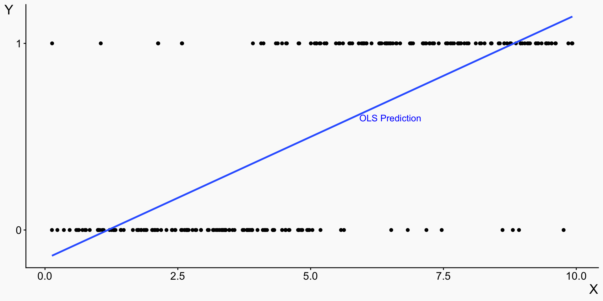
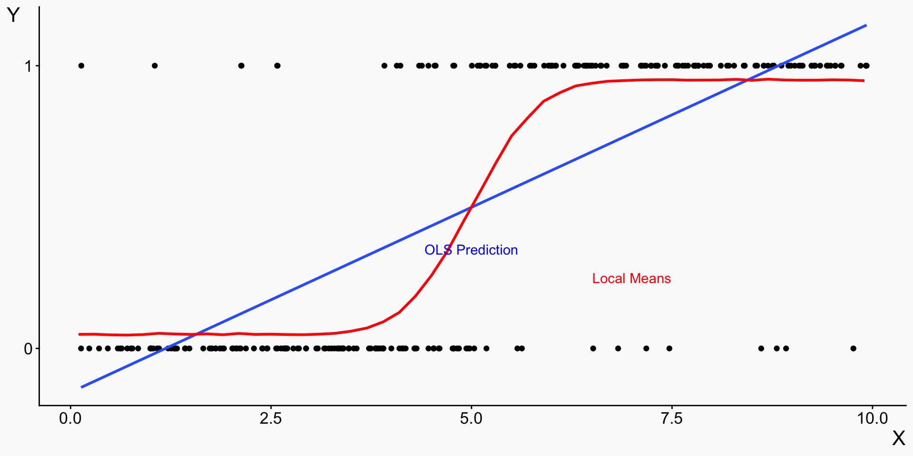
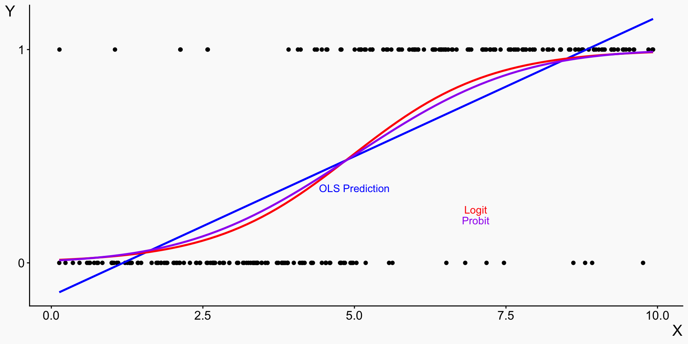
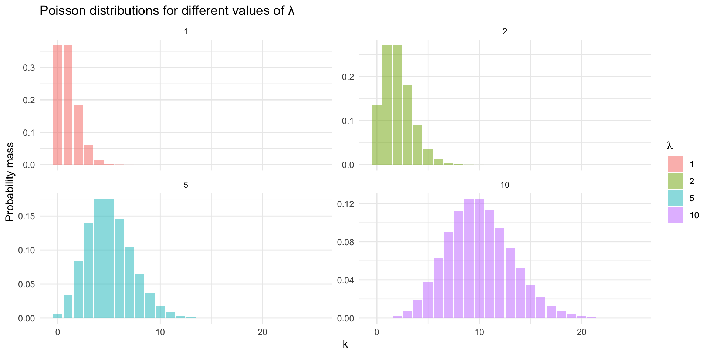
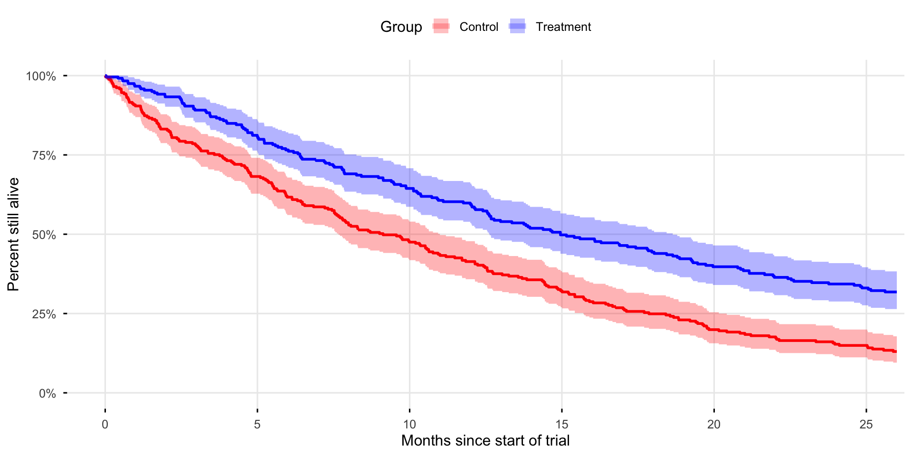

Introduction to Health Analytics
Limited Dependent Variables: LPM, Logit, Probit and More!
Dr. Sam Burn
Course road map
| Lecture | Topic |
|---|---|
| 1 | Introduction to health data & R |
| 2 | Data visualization |
| 3 | Data wrangling & exploratory data analysis |
| 4 | Causal inference |
| 5 | Linear regression |
| 6 | Linear regression: uncertainty & hypothesis testing |
| 7 | Panel data: difference-in-differences & fixed effects |
| 8 | Limited dependent variables: LPM, logit, probit |
| 9 | Introduction to machine learning for health analytics |
| 10 | Course review |
The health analytics pipeline

Today
- What are limited dependent variables?
- Binary outcome models
- Logit
- Probit
- Count data models
- Poisson
- Time-to-event (survival) models
- Survival curves
- Cox regression
What Are Limited Dependent Variables?
- Many outcomes in health data are not continuous:
- alive / dead (yes / no)
- number of hospital admissions (integer greater than zero)
- self-rated health status (ordered category)
- A limited dependent variable is an outcome whose support is restricted by design or by the data-generating process.
- Common cases in health analytics:
- Binary: two values only (0/1)
- Count: non-negative integers
- Duration: time until an event
- Censored: outcome only observed within a range
- Truncated: observations only in dataset if outcome is in some range
- These outcomes violate assumptions of OLS
Linear regression benchmark
- A typical linear regression model is: Y = \beta_0 + \beta_1 X + \varepsilon
- with the standard assumption that the error term \varepsilon is normally distributed.
- Two key ingredients:
- The normal distribution is continuous, smooth, and unbounded
- A linear function extends to -\infty and +\infty as X varies
- Together, this implies that the conditional distribution of Y \mid X:
- is continuous
- can take any real value
- If Y is binary, a count or bounded, this is violated mechanically and the model is misspecified
- This doesn’t mean OLS is useless!
- Can still be useful as a linear approximation to true data generating process
- Easy to interpret
- Works well with fixed effects & instrumental variables
Why we need other models
- For limited dependent variables, we often want models that:
- Respect the support of Y
- Produce sensible predictions
- Have interpretations aligned with the outcome
- Where we are going:
- Binary outcomes → logit and probit
- Count outcomes → Poisson models
- Duration outcomes → survival analysis
- The goal of this lecture is interpretation, not technical mastery!
Binary Outcomes
Binary Outcomes
- Common examples:
- Insured vs uninsured
- Diagnosis of disease
- Three approaches:
- Linear Probability Model (LPM)
- Logit
- Probit
Linear Probability Model (LPM)
Linear Probability Model (LPM)
- Ignore the issue and regress the binary Y on X as usual! Y_i = \beta_0 + \beta_1 X_i + \varepsilon
- Implies P(Y_i=1 \mid X_i) = \beta_0 + \beta_1 X_i
- Advantages:
- Easy to estimate and interpret
- Works with fixed effects
- Coefficients are marginal effects
- Disadvantages:
- Predictions outside [0,1]
- Constant slope
- Heteroskedasticity (makes estimator less efficient)
Interpreting the LPM
- If X is binary: \beta_1 = difference in probability
- If X is continuous: \beta_1 = change in probability for a one-unit change in X
- e.g. \hat{\beta}_1 = .03 means that a one-unit increase in X is associated with a three percentage point increase in the probability that Y = 1
- Note: a 3 percentage point increase is not the same as a 3% increase! e.g. an increase from 0.1 to 0.13 is a 3 percentage point increase but a 30% increase
- Warning: LLMs still (as of December 2025) get this wrong!
Predictions outside [0,1]
Incorrect Slopes
- For binary outcomes E[Y \mid X] = P(D=1 \mid X) must lie in [0,1]
- This implies the slope must go to zero as the probability approaches 0 or 1
- The linear probability model imposes a constant slope everywhere i.e. same marginal effect near P=0.99 as near P=0.50
- Compare LPM fit to local means

Implementing LPM in R
- Just use
feols()! - Note: Always specify heteroskedastic errors!
- One-unit increase in X is associated with a 13 percentage point increase in the probability that Y = 1
lpm
Dependent Var.: Y
Constant -0.1550*** (0.0443)
X 0.1308*** (0.0074)
_______________ ___________________
S.E. type Heteroskedast.-rob.
Observations 250
R2 0.49457
Adj. R2 0.49253
---
Signif. codes: 0 '***' 0.001 '**' 0.01 '*' 0.05 '.' 0.1 ' ' 1LPM summary
- What it does poorly:
- Produces invalid predicted probabilities (<0 or >1)
- Imposes a constant slope everywhere
- Especially problematic when \overline{Y} is close to 0 or 1
- Why we still often use it for causal inference:
- Coefficients are directly interpretable as probability changes
- Often sufficient for average causal effects
- Works cleanly with fixed effects, difference-in-differences and IVs
- Computationally simple and robust
Generalized Linear Models
Binary outcomes: latent variable model
- Assume there is an unobserved (latent) continuous variable: Y_i^* = \beta_0 + \beta_1 X_i + \varepsilon_i
- We do not observe (Y_i^*).
- We observe only whether it crosses a threshold: Y_i = \begin{cases} 1 & \text{if } Y_i^* > 0 \\ 0 & \text{otherwise} \end{cases}
- Y_i^* can be thought of as latent propensity e.g. if the underlying outcome Y is death, Y_i^* represents an (imperfectly observed) risk index summarizing the patient’s underlying severity,
From latent variable to probability
- The probability that Y_i=1 is P(Y_i = 1 \mid X_i) = P(Y_i^* > 0 \mid X_i)
- Substituting in Y_i^* = \beta_0 + \beta_1 X_i + \varepsilon_i P(Y_i = 1 \mid X_i) = P(\varepsilon_i > -(\beta_0 + \beta_1 X_i))
- The error term ( _i ) has some cumulative distribution function F(\cdot) P(Y_i = 1 \mid X_i) = \color{purple}{F(}\color{green}{\beta_0 + \beta_1 X_i}\color{purple}{)}
- \color{green}{\beta_0 + \beta_1 X_i} is the linear index function
- This is passed through a non-linear link function \color{purple}{F(\cdot)} that maps it to a probability!
- Two most common cases for binary variables:
- Logit: F(\cdot) = logistic CDF
- Probit: F(\cdot) = standard normal CDF
What do logit and probit look like?

Logit and Probit
- Logit: P(Y=1 \mid X) = \frac{e^{\beta_0 + \beta_1 X}}{1 + e^{\beta_0 + \beta_1 X}}
- Probit: P(Y=1 \mid X) = \Phi(\beta_0 + \beta_1 X)
- where \Phi(\cdot) is the standard normal cumulative distribution function
- In practice, coefficients from logit and probit differ in scale but “marginal effects” are usually pretty similar
- Logit is now more common because it is computationally simpler. Standard workhorse of data science!
- We focus on logit, but the same ideas apply to probit
Logit predictions
- All predictions are in the [0,1] interval
- As \beta_0 + \beta_1 X goes to -\infty: \frac{e^{\beta_0 + \beta_1 X}}{1 + e^{\beta_0 + \beta_1 X}} \rightarrow \frac{0}{1+0} = 0
- And as \beta_0 + \beta_1 X goes to \infty, \frac{e^{\beta_0 + \beta_1 X}}{1 + e^{\beta_0 + \beta_1 X}} \rightarrow \frac{\infty}{1+\infty } = 1
Implementing logit and probit in R
- We can implement logit and probit (and many other models!) in R using
feglm(“generalized linear model”) orglm() - Specify the kind of link function we have (
family = 'binomial'for binary data) - and the actual link function (
link = 'logit') - Coefficients look very different, but what does it all mean?!
lpm logit probit
LPM Logit Probit
Dependent Var.: Y Y Y
Constant -0.1550*** (0.0443) -4.347*** (0.5444) -2.318*** (0.2630)
X 0.1308*** (0.0074) 0.8786*** (0.1044) 0.4663*** (0.0491)
_______________ ___________________ __________________ __________________
Family OLS Logit Probit
S.E. type Heteroskedast.-rob. IID IID
Observations 250 250 250
Squared Cor. 0.49457 0.56212 0.54989
Pseudo R2 0.47026 0.44580 0.43213
BIC 203.21 203.03 207.77
---
Signif. codes: 0 '***' 0.001 '**' 0.01 '*' 0.05 '.' 0.1 ' ' 1Interpreting logit and probit in R
lpm logit probit
LPM Logit Probit
Dependent Var.: Y Y Y
Constant -0.1550*** (0.0443) -4.347*** (0.5444) -2.318*** (0.2630)
X 0.1308*** (0.0074) 0.8786*** (0.1044) 0.4663*** (0.0491)
_______________ ___________________ __________________ __________________
Family OLS Logit Probit
S.E. type Heteroskedast.-rob. IID IID
Observations 250 250 250
Squared Cor. 0.49457 0.56212 0.54989
Pseudo R2 0.47026 0.44580 0.43213
BIC 203.21 203.03 207.77
---
Signif. codes: 0 '***' 0.001 '**' 0.01 '*' 0.05 '.' 0.1 ' ' 1- For the logit and probit model, the coefficient on X represents the effect of a one-unit change in the index, not on Y directly
- And since the scale of the index depends on the link function, the interpretation depends on the link function!
- From the coefficients themselves we can get direction (positive/negative) and significance, but scale isn’t very intuitive
- Generally, when trying to interpret probit or logit coefficients it is helpful to transform them into statements about the effect of X on the probability that Y = 1
- We’ll get to how we do that soon!
Logit interpretation
- In a logit model we write: \log\!\left(\frac{P(Y=1\mid X)}{1-P(Y=1\mid X)}\right) = \log(\text{odds}(Y|X)) = \beta_0 + \beta_1 X
- Key objects:
- Probability: P(Y=1\mid X)
- Odds: \dfrac{P(Y=1\mid X)}{1-P(Y=1\mid X)}
- Log-odds: \log(\text{odds})
- Interpretation: A one-unit increase in X changes log-odds by \beta_1
Odds ratios
- Medical journals often report odds ratios
- When X is binary or categorical: OR = \frac{\text{odds}(Y|X=1)}{\text{odds}(Y|X=0)} = \exp(\beta_1)
- Interpretation:
- \exp(\beta_1)=1
→ no association with the outcome - \exp(\beta_1)>1
→ higher odds of Y=1 - \exp(\beta_1)<1
→ lower odds of Y=1
- \exp(\beta_1)=1
- Important:
- Odds ratios compare odds, not probabilities
- The same odds ratio implies different probability changes at different baselines
Odds Ratios vs Probabilities
- Suppose X is binary and the estimated odds ratio is OR = 1.2.
- Low baseline risk
- p_0 = P(Y=1\mid X=0) = 0.10
- Odds_0 = 0.10 / 0.90 = 0.11
- Odds_1 = 1.2 \times 0.11 = 0.13
- p_1 = 0.13 / (1 + 0.13) \approx 0.12
- Probability change: +1.7 percentage points
- High baseline risk
- p_0 = P(Y=1\mid X=0) = 0.50
- Odds_0 = 0.50 / 0.50 = 1
- Odds_1 = 1.2 \times 1 = 1.2
- p_1 = 1.2 / (1 + 1.2) \approx 0.55
- Probability change: +4.5 percentage points
Marginal effects
- A marginal effect measures how a small change in a covariate changes the predicted probability of the outcome.
- Formally, for a continuous variable X: \text{Marginal effect of } X = \frac{\partial P(Y=1 \mid X)}{\partial X}
- It is the change in probability, not odds or log-odds
- In LPM, the marginal effect is constant
- In logit and probit marginal effects:
- depend on the value of X and covariates!
- are usually largest in the middle of the distribution
- Common to report average marginal effects: Calculate each individual observation’s marginal effect, then take the mean \text{Average marginal effect} = \frac{1}{n}\sum_{i=1}^n \frac{\partial P(Y=1 \mid X)}{\partial X}
Marginal Effects in R
- We can calculate the individual marginal effects using
slopes()and the average marginal effects usingavg_slopesin the marginaleffects package. - “In the logit and probit models, the estimated average marginal effect of X in around 10 percentage points”
- Average marginal effects from logit/probit will tend to be smaller than LPM when many observations have predicted probabilities close to 0 or 1
- AMEs from logit/probit will be similar to LPM or higher when there is a lot of mass in the middle of the distribution (with probabilities close to 0.5)
lpm <- feols(Y~X, data = tib, vcov='hetero')
logit <- feglm(Y~X, family = binomial(link = 'logit'), data = tib)
probit <- feglm(Y~X, family = binomial(link = 'probit'), data = tib)
ame_lpm <- avg_slopes(lpm) # Same as the regression coefficient
ame_logit <- avg_slopes(logit)
ame_probit <- avg_slopes(probit)| LPM | Logit | Probit | |
|---|---|---|---|
| Average marginal effect of X | 0.131 | 0.106 | 0.106 |
| 0.007 | 0.002 | 0.002 |
Cautions
- Fixed effects in logit/probit can be tricky:
- You need specialized estimators (e.g.
feglm()infixest) - Estimates can be fragile due to dropped units and convergence failures
- Interpretation is less transparent than in the LPM
- You need specialized estimators (e.g.
- Logit and probit are estimated by maximum likelihood
- In small samples, MLE can be biased and unstable
- Interaction terms in logit/probit do not represent interaction effects on probabilities
- Marginal effects of interactions are nonlinear and can change sign
- Best practice is to show how marginal effects vary across values of covariates
- Takeaway: Logit and probit are powerful, but they can be harder to interpret and estimate, especially with fixed effects
Count Data
Count Data
- Examples of count data:
- Number of doctor visits
- Number of pregnancies
- Number of prescriptions filled
- Key features:
- Non-negative integers
- Often skewed
Poisson Regression
- Conditional expectation: E(Y_i \mid X_i) = \exp(\beta_0 + \beta_1 X_i) = \lambda_i
- \beta_1 is the effect of X on the log of the expected outcome \frac{\partial \log E(Y_i \mid X_i)}{\partial X_{i}} = \beta_1
- Therefore, the exact percentage change is: (\exp(\beta_1) - 1)\times 100\%
- For small values of \beta_1: \exp(\beta_1) - 1 \approx \beta_1
- We often say “a one-unit increase in X is associated with an approximately \beta_1 \times 100% percentage change in Y
- We can interpret \beta_1 as a semi-elasticity
Poisson Distribution

Survival analysis
Time-to-Event Outcomes
- Examples:
- Time from surgery to death
- Time from trial entry to disease progression
- For each individual we observe:
- t_i = observed time
- \delta_i = event indicator (1 = event, 0 = censored)
- Data is often “right-censored”: not everyone experiences event during study
Survival Function
- The central object is the survival function: S(t) = P(T > t)
- Interpretation: Probability that the event has not occurred by time t
- Properties:
- S(0) = 1
- S(t) is non-increasing
- S(t) can be read directly from a survival curve
Kaplan–Meier Survival Curves
0 1
Control 34 227
Treatment 76 163 Min. 1st Qu. Median Mean 3rd Qu. Max.
0.01033 4.78926 12.00905 13.19563 23.44762 26.00000 
Kaplan–Meier Curves: Reading Survival Probabilities
- The Kaplan–Meier estimator gives the survival function S(t) = P(T > t)
- How to read the curve:
- Pick a time point (t) on the x-axis
- Move up to the survival curve
- Read the corresponding value on the y-axis
- Example: S(12) = 0.60 means 60% of individuals are expected to survive 12 months or more
- We can also invert the survival curve.
- The median survival time is the smallest (t) such that S(t) \le 0.5
- Difference in median survival between treatment and control is approximately 6 months
Comparing Survival Across Groups
- Log-rank test is a hypothesis test commonly used in survival analysis
- Null hypothesis: H_0: S_{\text{treatment}}(t) = S_{\text{control}}(t)
- Interpretation:
- Small p-value → reject null hypothesis of no difference in survival
- Tells you whether survival differs, not by how much
- To quantify effects or adjust for covariates, we can use Cox regression.
Cox Proportional Hazards Model
- The Cox model specifies the hazard rate at time (t): \lambda(t \mid X) = \lambda_0(t)\exp(\beta_0+\beta_1X)
- where:
- \lambda(t \mid X) is the instantaneous risk of the event at time t
- \lambda_0(t) is the baseline hazard
- Assumption: Effects of variables on survival are constant over time (“proportional hazard”)
- Interpretation: coefficient on X interpreted as log of “hazard ratio”
- A one-unit increase in X multiplies individual i’s hazard by \exp(\beta_1)
- If HR = \exp(\beta_1)=1 → no effect on the hazard
- If HR = \exp(\beta_1)>1 → higher hazard (event tends to occur sooner)
- If HR = \exp(\beta_1)<1 → lower hazard (event tends to occur later)
Takeaways
- Limited dependent variables are outcomes where the possible values are restricted
- OLS can still be useful even when the outcome is limited:
- Easy to interpret (coefficients = marginal effects)
- Provides a linear approximation to the relationship between X and Y
- Linear probability model (LPM) = OLS on a binary outcome:
- \hat{\beta}_1 = change in P(Y=1) for a one-unit change in X (in percentage points, not %)
- Predictions can fall outside [0, 1]
- Logit / Probit (binary) → interpret via average marginal effects (or odds ratios for logit)
- Poisson (counts) → coefficients are semi-elasticities
- Survival analysis for time-to-event outcomes:
- Kaplan–Meier curves read off survival probabilities or median survival